From time to time questions are raised on W3C mailing lists about how to implement phonetic annotations in zhùyīn fúhào, or bopomofo. Participants in these discussions need a good understanding of the various complexities of bopomofo rendering, particularly concerning the way tone marks are handled.
My aim in this page is to provide background information that can help with those discussions, and carry useful ideas from one discussion to the next. I also add some personal thoughts on implementation alternatives, given current data.
This page is updated from time to time, as new information becomes available, as feedback arrives, and as ideas are clarified. Latest update was 2014-02-04 12:10 GMT.
Bopomofo, or zhùyīn fúhào, is an alphabet that is used for phonetic transliteration of Chinese text. It is usually only used in dictionaries or educational texts, to clarify the pronunciation of the Chinese ideographic characters, or in IMEs (input method editors) to build a Chinese character.
Occasionally, they are used in instead of Chinese characters, often to represent new colloquialisms or words in indigenous Taiwanese languages. You can also find tables of transcriptions, or even whole Web pages written in bopomofo.
The name bopomofo is equivalent to saying “ABCD” in English, ie. it strings together the pronunciation of the first four characters in the zhuyin fuhao alphabet.
One of these characters, U+3127 BOPOMOFO LETTER Iㄧ, can appear as either a horizontal or vertical line, depending on the context, although most contemporary fonts display horizontally in both vertical and horizontal text. (See the Unicode7 erratum.)
These are the bopomofo characters in the basic Unicode Bopomofo block.
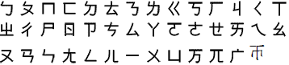
In addition to the base characters, there are a set of Unicode characters that are used to express tones. For Mandarin Chinese, these characters are :
It is important to understand that bopomofo tone marks are not combining characters. They are regular spacing characters that are stored after the sequence of bopomofo letters that make up a syllable.
A key issue for handling of bopomofo is the placement of tone marks. When bopomofo text runs vertically (either on its own, or as a phonetic annotation), some smarts are needed to display tone marks in the right place. This may also be required (though with different rules) for bopomofo when used horizontally for phonetic annotations (ie. above a base character), but not in all such cases. However, when bopomofo is written horizontally in any other situation (ie. when not written above a base character), in tone marks on the Web often follow the last bopomofo letter in the syllable, with no special handling.
It is not common to see text written only in bopomofo, but it does occur from time to time for Chinese, and sometimes it is used to represent text in aboriginal Taiwanese languages.
Bopomofo is often written on its own in vertical layout in educational materials. Tone marks are typically displayed to the right of the letters, except for the fifth (light) tone, which is shown at the beginning of the column of letters.
Vertical bopomofo in educational materials. (Snap of a web page using Flash.)
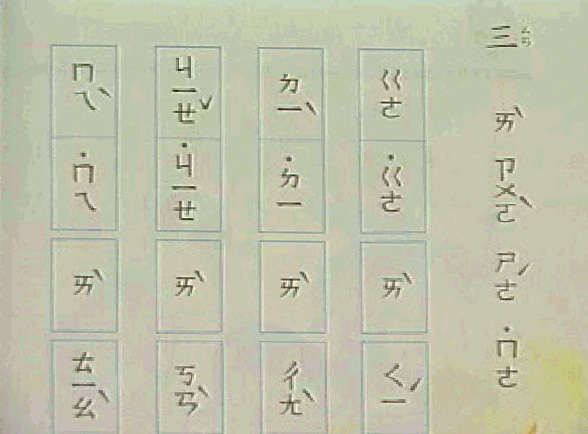
Another example of vertical bopomofo in educational materials. (Picture by Bobby Tung.)
When written on its own in horizontal layout bopomofo letters are written in order of pronunciation, and for most of the content in markup on the Web you usually see tone marks displayed as spacing characters after the syllable they modify.
Example: ㄓㄨˋㄧㄣˊㄏㄠˋ ㄧㄚ˙
What we're talking about here tends to be what you see when a page shows transcriptions in a separate column or in parentheses (ie. not over a base character). For example:
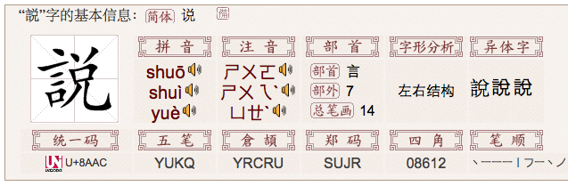
Bopomofo (and pinyin) transcriptions in a dictionary page. (from zdic.net)
There are rare circumstances where the whole page content is written in horizontal bopomofo (example).
This is how bopomofo is displayed in an IME (input method editor).
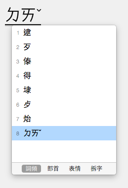
Bopomofo in an input method editor.
As we saw in the previous section, in vertically-set text (and in phonetic annotations, see below) it's pretty standard to find tones behaving like diacritics relative to the bopomofo letters. In horizontally-set text the standard, if it is to be judged by the content out there, is to display the tone marks as spacing characters.
What's not clear is whether that is the way it should look, or whether it is simply because the Web technology doesn't support bopomofo tone display correctly.
(The light tone, shown in the IME example above, is not normally ever displayed above the bopomofo letters in horizontal text, but rather on the same line. However, it can be displayed at the beginning of the syllable. See the next section for more about this.)
As mentioned above, on the Web it is common to find tone marks displayed in existing horizontal text on the same line and at the end of the syllable. This tends to apply to the light tone also.
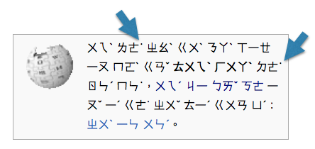
Bopomofo text with several light tones trailing the syllables they belong to. (from uncyclopedia.tw)
In phonetic annotations and in vertically set text, however, it is normal to find the light tone mark at the start of the syllable.
This placement at the start of the syllable in horizontal text seems common for dictionaries also.
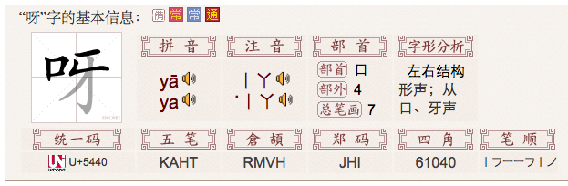
Bopomofo transcription ˙ㄧㄚ showing a light tone preceding the syllable in a dictionary page. (from zdic.net)
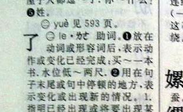
Bopomofo transcription ˙ㄌㄜ showing a light tone preceding the syllable in a Xin Hua dictionary page.
As we saw above, this is not how bopomofo is input in an IME. The IME requires you to type the tone mark last.
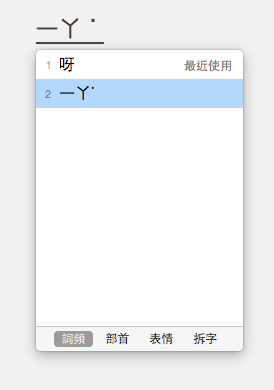
Bopomofo in an input method editor. (Picture by Bobby Tung)
If you add the bopomofo to your content, rather than converting it to a han character, it will normally look the same, ie. the light tone after the bopomofo letters. If you want to display the tone before the letters, the question is whether you should move the character, or apply some smart font technology to achieve this.
It also isn't clear whether it is ever appropriate to leave the light tone trailing the syllable, even though it occurs in the wild on many pages. This could just be a result of poor technological support.
I have also come across instances where a bopomofo character has been included among Chinese ideographs. It seems to typically reflect slang or colloquial usage.
Bopomofo ㄟ mixed with Chinese hanzi characters on the back of a bus during Taiwan’s presidential campaign. (From pinyin.info)
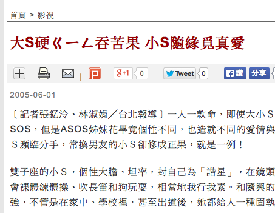
Bopomofo ㄍㄧㄥ mixed with a Chinese headline. (From news.itn.com.tw)
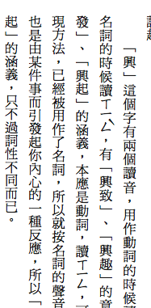
Bopomofo ㄒㄧㄥˋ in vertical Chinese text, showing handling of tone mark. (Detail of a picture by Bobby Tung.)
A much more common use of bopomofo is for phonetic annotation of Chinese characters, similar to Japanese ruby. When used to describe the phonetics of Chinese ideographs in running text, bopomofo can be rendered in different ways. A bopomofo transliteration is always done on a character by character basis (ie. mono-ruby in CSS parlance).
In this approach the annotation is generally written above the horizontal base text.
There appear to be two ways of displaying tone marks: (1) following the bopomofo characters for each ideograph, and (2) above the bopomofo characters, as if they were combining characters. We need clarity on which of these approaches is most common, and which needs to be supported. For details about tone placement in (2) see below.
This is a common configuration. The bopomofo appears in a vertical line to the right of each base character. In general, tone marks then appear to the right of the bopomofo characters, although the vertical position of a tone mark is context-dependent (see below for details).
The position of tones 2-4 depends on the number of bopomofo characters the tone modifies, and on whether the base text is vertically or horizontally set.
The Ministry of Education in Taiwan has issued charts indicating the expected positioning for bopomofo characters and their tones that are roughly illustrated in the diagram that follows. The charts cover alignment for characters associated with vertical ruby (here, here and here) and for characters associated with horizontal ruby (here, here and here).
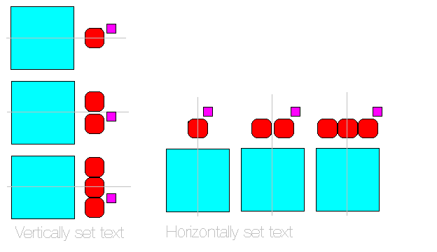
Positioning of tones, relative to bopomofo letters.
In vertically set ruby, the top half of the glyph box of a tone mark extends upwards beyond the top edge of the last bopomofo character in the sequence it modifies.
However, in horizontally set ruby, the right half of the glyph box of the tone mark extends beyond the right-most edge of the last bopomofo character in the sequence.
There are diagrams for 3 ratios in the complete document: 9:9, 9:8 and 8:9. Bobby Tung spoke to someone at the Ministry who told him that the 9:9 ration (pp.5-6) is preferable for better legibilitylink.
I have also observed printed examples where the tone appears to be simply displayed alongside the last bopomofo letter in vertical text, with the top of the tone and the adjacent bopomofo character aligned, as shown in these examples:
Slightly different vertical positioning of tones, relative to bopomofo letters.
When a light tone (U+02D9 DOT ABOVE˙) is used in a vertical annotation it appears at the top of the column of bopomofo letters. The image just below illustrates this.
A syllable with light tone.
Similarly, in a horizontal annotation it appears to the left of the bopomofo letters, on the same line.
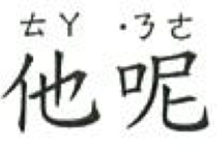
A syllable with light tone.
Since the light tone is usually typed and stored after the bopomofo letters in the text, this means that software needs to take care of positioning it correctly for display in this context. For example, you would normally expect to code the above example in markup as follows:
<ruby>他<rt>ㄊㄚ</rt>呢<rt>ㄋㄜ˙</rt></ruby>
Note that IMEs don't recognise a sequence with the light tone at the start – you have to type it at the end.
Zhuyin fuhao tone marks are usually stored after the sequence of bopomofo characters which they modify. Thus, you would expect the actual sequence of characters in memory for the example above to be the order in which you'd normally type it, ie.
ㄉ
U+3109 BOPOMOFO LETTER D
ㄧ
U+3127 BOPOMOFO LETTER I
˙
U+02D9 DOT ABOVE
Order of characters in memory.
It's easy to find horizontal bopomofo text in Web pages, and these largely show the light tone after the bopomofo letters (examples).
As mentioned before, it's possible that this is just because there is no way of handling bopomofo differently when it appears in ordinary markup. Certainly, it is also not hard to find examples where the light tone is set at the start of the syllable.
In particular, in phonetic annotations alongside base text, and in vertical bopomofo text the light tone usually appears before the bopomofo letters.
It is not always particularly clear how implementations currently store the light tone (before or after bopomofo letters), given that they necessarily have to resort to approaches that are not based on simple markup, but in general it appears that the light tone code point appears before those of the bopomofo letters in memory, rather than relying on rendering contortions at the time of display to make it appear in initial position.
For example, one implementation that handles bopomofo ruby well is https://www.moedict.tw/ and it stores the tone after the bopomofo, if you look at the source code of a dictionary page. The markup, however, separates the tone marks from the bopomofo letters, and the actual positioning is achieved using scripting, eg.
<zhuyin><yin>ㄗ</yin><diao>˙</diao></zhuyin>
for the annotation in the top left corner of
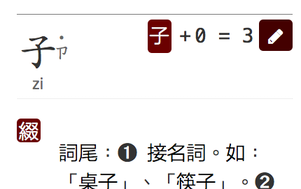
In the JSON code the light tone is currently stored before the bopomofo letters.
The CSLD dictionary database follows the same convention internally, too. The output from both of these dictionaries, displays the bopomofo annotations vertically.
In other dictionaries, it is clear that the policy is to use the character for the light tone before the bopomofo letters.
In the zdict.net dictionary example already seen above, the transcription is horizontal, and is just characters in HTML. In the source code the character for the light tone comes before those of the bopomofo letters.
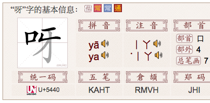
Bopomofo transcription showing a light tone preceding the syllable in a dictionary page. (from zdic.net)
Below is source text from a different dictionary, but another example of content in HTML where the light tone has been stored before the bopomofo letters.
Source code showing a light tone preceding the syllable in a dictionary page. (from dict.revised.moe.edu.tw)
One factor to bear in mind here is that if a content author wants to create phonetic annotations using HTML markup they need to add the annotation to an <rt> tag. For example
<ruby>呀<rt>ㄧㄚ˙</rt></ruby>
What you see above is what comes naturally out of typing with the IME. If the ruby implementation requires the light tone to appear before the bopomofo letters, the author will have to remember to change the order each time they hit a syllable with a light tone. This doesn't seem intuitive, and would certainly slow down manual input.
Databases storing strings that might be used for such phonetic annotations would also need to handle the light tone differently from the common default.
This lab tool from the Ministry of Education automatically selects bopomofo annotations for the user, and builds source text using ruby markup as the user indicates which options they prefer. Tools of this kind are intended to reduce the burden of transposing the position of the light tone.
A tool to help authors compose phonetically annotated source text. (from moedict.tw)
It's also interesting to see how Microsoft Word handles this. The screen snap below shows the the dialog box for attaching bopomofo annotations to the ideographic characters to the left. Note that we have changed the default annotation (ㄌㄧㄠˇ) given for the second character to ㄌㄜ˙, typing the light tone at the end.
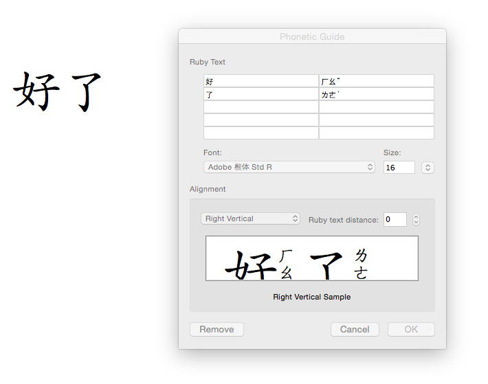
Inputting bopomofo annotations in Microsoft Word, with the light tone at the end of the syllable.
In the next figure you see the result on the left, and we have re-opened the phonetic guide dialog box. Both on the page and in the dialog box the light tone now precedes the bopomofo letters for that syllable.
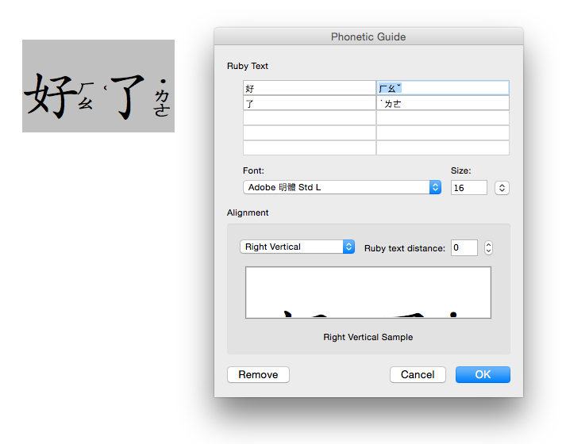
The bopomofo annotations in Microsoft Word put the light tone at the start of the syllable.
Word has clearly transposed the position of the characters during the phonetic input. If you copy and paste the content into a text file, the light tone remains at the start of the syllable. If you export the page to HTML or toggle the field codes, the light tone also appears at the start of the syllable.
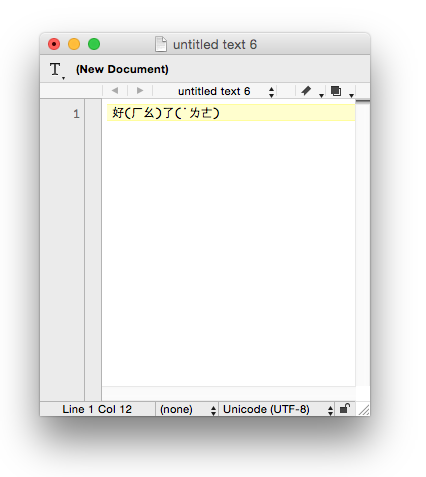
Text from the above Word document pasted into a plain text file.
A common approach, then, to achieve the correct position of the light tone is by manipulating the characters. This is useful in that it is less technically demanding than achieving the same result during rendering. It is also something that can be introduced immediately – no need to wait for technology to catch up.
On the other hand, it's not yet clear whether leaving the light tone after the end of the syllable is still a valid presentation form for free-flowing text – is the before placement just a convention appropriate to dictionaries and phonetic annotations? Is there a requirement to be able to do either in running text?
If it turns out that before placement is the way the light tone ought to be handled in all cases, the IMEs may need to change their behaviour over time.
The question has been raised by more than one potential implementer of bopomofo ruby on the Web. It sounds like it might afford a convenient solution to rely on OpenType features.
If you look hard enough, you may find one or two fonts that have bopomofo annotations built in for each Chinese character (see an example). This can produce nice looking output, but such fonts suffer from a significant issue: characters don’t always have just one possible phonetic realisation.
It seems possible that a workable solution would be to use OpenType rules to determine the appropriate position of a tone mark relative to the bopomofo it follows. The rules would have to ascertain whether the text is vertically or horizontally set, since the rules for placement are different in those cases.
The required positioning information is not currently available in any standard Chinese fonts that I'm aware of, but it seems plausible that, in the short term, small bopomofo-only fonts could be created relatively easily, distributed for free, and applied to ruby characters using CSS. This may offer a way to get support for bopomofo tone marks 2–4 ( ˇ ˋ ˊ ) much quicker than waiting for the major Chinese fonts to add support.
Coming back to tones 2–4, an alternative approach to achieve correct positioning would be to rely on rules implemented in the browser to offset the position. The advantage of such an approach would be that it is feasible to make the tones look right for existing fonts, which don't have OpenType rules for tone mark positioning. If you look at the figure above, I suspect that Microsoft Word does the same thing, if you set the language of the content to Chinese, since tones are repositioned for all fonts I tried.
On the other hand, bopomofo fonts that can handle phonetic annotations would presumably be useful for simple strings of bopomofo, too.
This is another common suggestion from people trying to get to grips with the problem. The proposal is that you could assign vertical styling to the annotation, and put the tones on a new line.
Again, I see significant issues with this.
First, if the tone is to be in a separate vertical area it suggests that you would have to mark up the tones separately from the bopomofo letters. This puts a fairly big additional burden on the content developer – either to insert markup, or to develop accurate scripting and styling, and makes it much harder to read the source text.
Second, so you have your tone mark in a separate vertical column – but how do you vertically align it with the bopomofo letters as needed? That's not trivial, given that it depends on the number of characters in the annotation as to where the character goes.
And what about the light tone? This needs to be positioned before the first bopomofo letter. To get that right you'd presumably have to store the light tone before the letters in the character sequence (see the issues above).
It all seems too complicated. Japanese content developers don't need to bend over backwards to use ruby. They just use markup to indicate the base and annotation relationships, and everyone expects the browser to automatically apply a default alignment and positioning that works. Why should bopomofo ruby be more complicated for the content author?
It has been suggested that tone marks are a kind of ruby on ruby, and that therefore, perhaps, nested ruby is an appropriate approach.
One issue with such an approach is the huge complexity it brings to the markup, especially when you want to add both bopomofo and pinyin ruby to a single base character.
However, the key issue remains, as described in the previous section, how to achieve the correct vertical or horizontal positioning of the tone marks relative to the bopomofo characters. Something additional would need to be specified to indicate that this is a special case, and an implementation would have to know how to achieve the correct positioning, given the direction of the bopomofo letters.
There would, therefore, appear to be little to recommend this approach over others, especially in light of the additional complexity it brings with it.
Here are my tentative conclusions about how to move forward with bopomofo ruby.
Bopomofo phonetic annotations should be handled in standard HTML5 ruby markup, eg.
<ruby>好<rt>ㄏㄠˇ</rt>了<rt>˙ㄌㄜ</rt></ruby> .
The positioning of tones 2-4 should be achieved using OpenType font rules, with slightly different rules for horizontal vs. vertical alignment of the bopomofo letters. I'm not aware of any such font at the moment, but it would presumably not be too difficult to create one (preferably with an open font licence) if it just contains bopomofo characters. It could then be used for ruby by adding something like this to the CSS style sheet:
For the light (5th) tone, it appears that de-facto users are placing the code point where they want the tone mark to be displayed (at the beginning or end of the syllable). This tone mark does not need OpenType rules for display – placing the code point is sufficient. See the markup example above.
The above would probably also work for bopomofo text in general, whether horizontal or vertical.
There is still an open question about whether trailing light tones are legitimate or simply a fallout of under-developed technology. If they are not legitimate, IMEs should allow users to type the light tone first for lookup, and if the user doesn't, the IME should still work, and should automatically reorder the code points when the user inserts the bopomofo without conversion. In fact, allowing the user to type the light tone first in the IME, and adding it in that order to the text, is likely to also be useful if both tone positions are legitimate.
{kind=link}